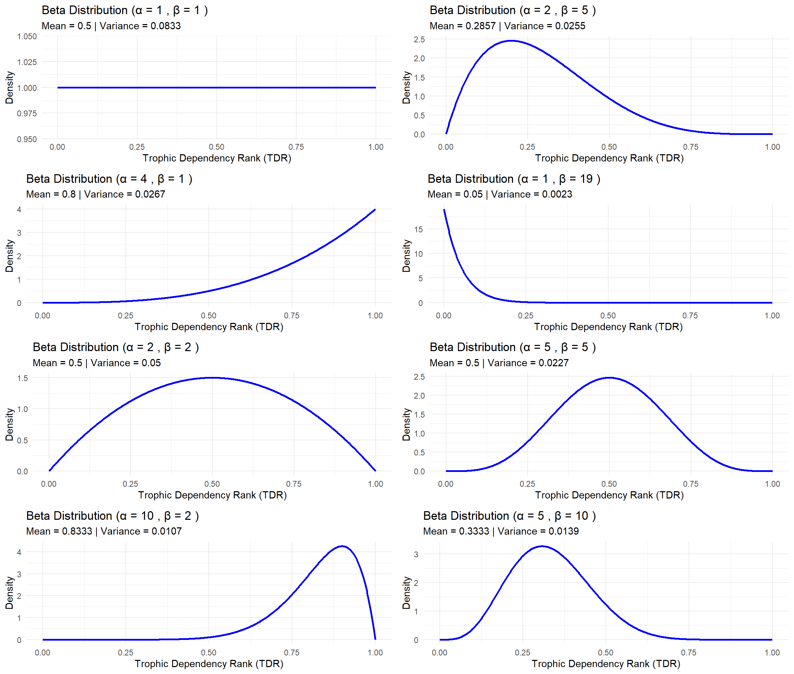
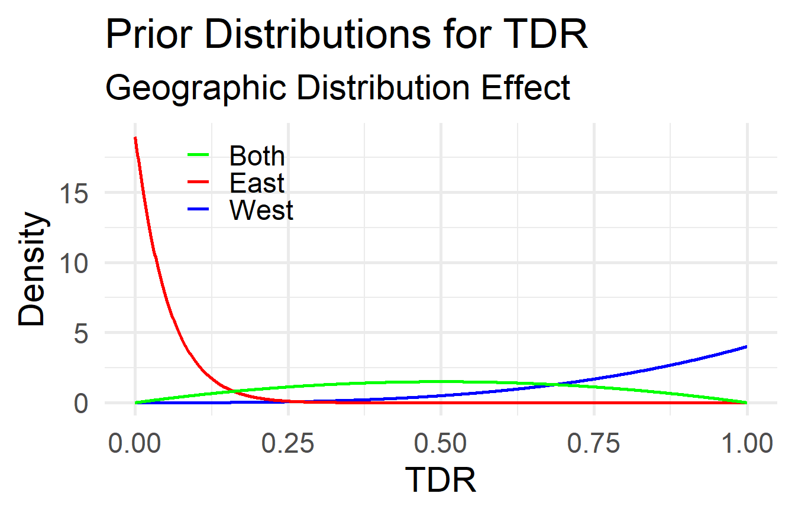
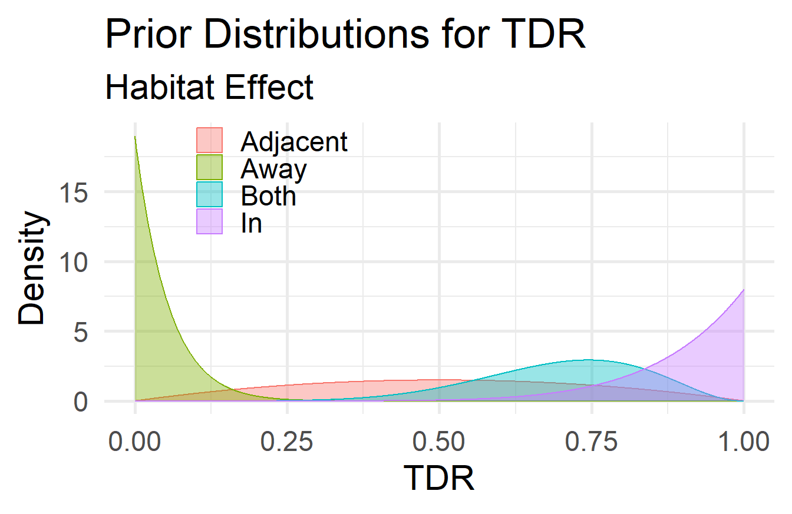
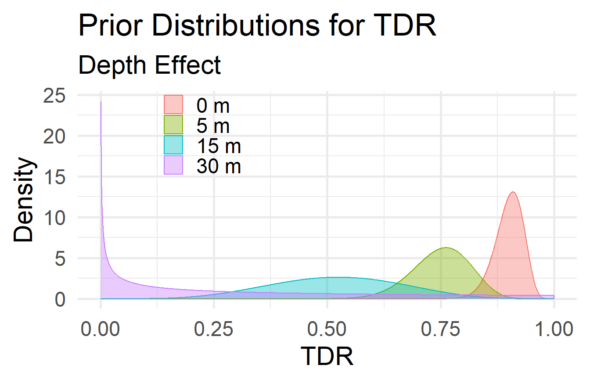
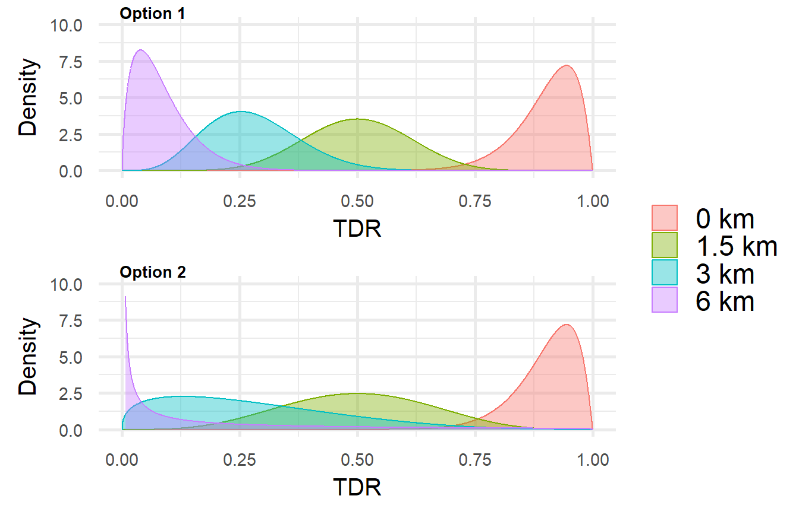
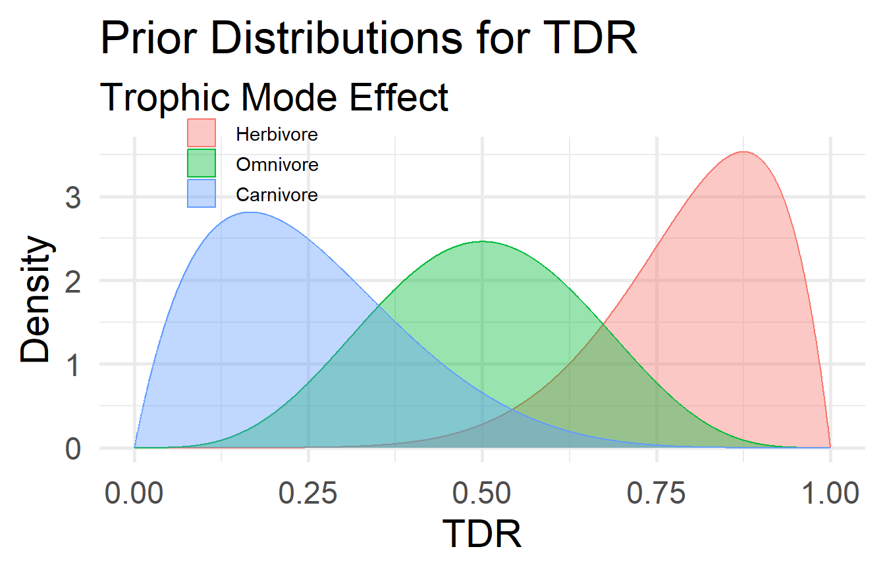
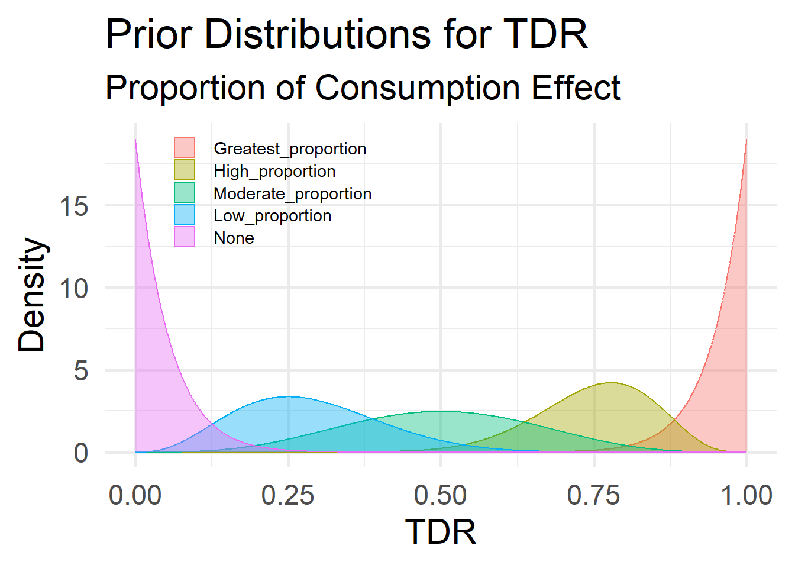

Kelp Forest Dependence of South African Fish Species
Bayesian Analysis Framework
The Bayesian analysis framework underpins the assessment of clarifying the dependency of line-fish into categories of dependency or association based on their relationship with kelp forests. Previous literature studies have been nuanced in their descriptions and understanding with the terms dependency and association, often using these terms synonymously. The background of this models aims to establish a difference between the terms dependency and association with each being specified in accordance with the following belong:
- Ecological benefit: Increased fitness
- Association: The geographical overlap of line-fish and kelp forests along the coast, with no ecological benefit derived from kelp forests by line-fish
- Dependency: Line-fish obtain an ecological benefit from kelp forests, either in the form of habitat or trophic provisioning
Dependency can be specifically subdivided to provide clarity on the degree of the ecological benefit line-fish obtain from kelp forests, including:
- Facultative: Line-fish benefit ecologically from kelp forests, but can obtain a benefit from other ecosystems
- Obligatory: Line-fish strictly and only benefit ecologically from kelp forests
The Bayesian analysis framework intends on providing clarity to the interactions that occur between line-fish and kelp forests and will make use of the above the terminology. A methodology will be setup to determine the dependency ranking of line-fish, focusing specifically on trophic and habitat provisioning. The priors will be set up separately for these two ranking systems, with each focusing on factors that will determine whether fish benefit on kelp and the degree to which the benefit is received.
Trophic Dependency Ranking (TDR)
The Bayesian analysis framework aims to determine the TDR of line-fish on kelp forests. This will follow a methodological structure, of which priors will be first be set-up. The priors selected in this section will infer knowledge on the possible interactions line-fish have with kelp forests. Due to the lack of information there are with certain fish species, uncertainties will also be taken into consideration to provide a probabilistic estimate of the interaction occurring. Priors will be set up to account for this uncertainty and will later be integrated to include the different categories to display an overall TDR of line-fish on kelp forests.
Priors
The priors are categories that will be used to determine the possible interaction between line-fish of kelp forests. These priors will encompass factors that will touch on the boundaries and extent of fish occurrence along the coast, along with the degree of consumption of kelp or kelp associated organisms. These priors were selected based on the knowledge sourced from literature sources.
The prior represents our initial beliefs about a parameter’s effect on the TDR estimate before observing the current data. In this context, the priors will encode our expert knowledge and assumptions about the TDR based on the answers to Questions 1-x in the Survey Questionnaire. These priors will then be updated with the data (likelihood) to produce the posterior distribution, which reflects our updated beliefs about the TDR.
Each question provides qualitative information that can be quantitatively translated into prior distributions for the TDR.
Step 1: Assigning priors selection
The priors play a big role in shaping the posterior distributions. The type of prior—whether Diffuse, Weakly Informative, or Informative—reflects different levels of prior knowledge or assumptions about the parameter before seeing the data. Pay careful attention to assigning priors. A diffuse or non-informative prior is chosen to exert minimal influence on the posterior distribution and allows the data to drive the posterior in the absence of strong prior beliefs. Weakly informative priors provide some guidance without strongly biasing the posterior. They reflect a minimal level of knowledge or reasonable assumptions about the parameter’s likely range without assuming high confidence in specific values. Informative priors are used when there is strong prior knowledge or beliefs about the parameter.
Question 1: Geographic Distribution
Because the distribution of kelp forests and the availability of kelp as a food source vary between the west and east coasts (Ecklonia maxima at De Hoop) regions, fish species that are distributed in different regions along the South African coast may have different TDRs.
Select the option that best describes the geographical distribution of the fish species along the South African coast in relation to the distribution of kelp forests (Ecklonia maxima and/or Laminaria pallida). This information will help assess the species’ potential Trophic Dependency Rank (TDR) on kelp.
Choices: [West | East | Both]
- [West]: The species is exclusively found in the western region of the South African (and/or Namibian) coast, which is dominated by kelp forests (Ecklonia maxima and/or Laminaria pallida). Therefore, it is likely that the species has a higher Trophic Dependency Rank (TDR) on kelp, potentially even indicating an obligate dependency on kelp-derived carbon.
- [East]: The species is exclusively found along the coastline east of the eastern limit of kelp forests (east of De Hoop), where Ecklonia maxima does not occur, and kelp forests are absent (but there’s still Ecklonia radiata). Consequently, the species is expected to have a TDR close to zero (not zero due to chance of accessing E. radiata), indicating no to minimal dependency on kelp-derived carbon.
- [Both]: The species is found in both the western region (with kelp forests) and the eastern region (without kelp forests). As a result, the species may have an intermediate TDR, suggesting a facultative dependency on kelp-derived carbon, where the species utilises kelp when available but can also thrive without it.
Three dependency types are accommodated by these options. Obligate Dependency indicates that the species relies heavily on kelp-derived carbon and may not thrive without it. Facultative Dependency is when species can utilise kelp-derived carbon when available but can also survive without it. Lastly, No Dependency when a species does not rely on kelp-derived carbon and can thrive without it.
Translation into Priors:
To model a parameter like TDR, which is a proportion bounded between 0 and 1 (or 0% to 100%), use a Beta distribution. It has a flexible shape and so will allow for various levels of certainty and mean values. The Beta distribution has two shape parameters, \(\alpha\) and \(\beta\), which determine the mean (Equation 1) and variance (Equation 2) of the distribution:
\[ \mu = \frac{\alpha}{\alpha + \beta} \tag{1}\]
\[ \sigma^2 = \frac{\alpha \beta}{(\alpha + \beta)^2 (\alpha + \beta + 1)} \tag{2}\]
Example profiles of the Beta distribution for different values of \(\alpha\) and \(\beta\) are shown in Figure 1:
We can solve for α and β given the desired mean and variance.
For example, for the ‘West’ region, our desired mean is \(\mu = 0.8\), which reflects a higher TDR. We choose a variance that indicates more uncertainty (because a species simply being confined to this region offers little certainty that it has a TDR reflective of kelp usage). Since we want a wider distribution (higher uncertainty), we can choose \(\alpha\) and \(\beta\) to be smaller. A Beta(4,1) distribution can be chosen to reflect a high TDR (mean = 0.8 from Equation 3) with moderate uncertainty (variance ~0.0267 from Equation 4). The calculations are as follows:
\[\mu = \frac{4}{4 + 1} = 0.8 \tag{3}\]
\[\sigma^2 = \frac{4 \times 1}{(4 + 1)^2 (4 + 1 + 1)} = \frac{4}{25 \times 6} = \frac{4}{150} \approx 0.0267 \tag{4}\]
The priors for the ‘West,’ ‘East,’ and ‘Both’ geographic regions are therefore:
| Region | Beta Parameters (α, β) | Mean (μ) | Variance (σ²) |
|---|---|---|---|
| West | α = 4, β = 1 | μ = 0.8 | σ² ≈ 0.0267 |
| East | α = 1, β = 19 | μ = 0.05 | σ² ≈ 0.00226 |
| Both | α = 2, β = 2 | μ = 0.5 | σ² = 0.05 |
Visualising these priors helps us understand how they reflect our prior beliefs about the TDR. The priors are shown in Figure 2:

Question 2: Habitat
In this question you are asked to select the answer that best describes the habitat of the fish species in relation to kelp forests. Answering ‘In’, ‘Adjacent’, or ‘Both’ pertains to instances when you answered ‘West’ in Question 1. Answering ‘Away’ applies only to when you answered ‘East’ in Question 1.
Choices: [In | Adjacent | Both | Away]
- [In]: The species is found within kelp forests, where it is likely to have a higher Trophic Dependency Rank (TDR) on kelp, positioning the species more towards an obligate dependency on kelp-derived carbon.
- [Adjacent]: The species is found adjacent to kelp forests, where it may have a moderate TDR on kelp, indicating a facultative dependency on kelp-derived carbon (via allochthonous kelp-derived carbon).
- [Both]: The species is found in both kelp forests and adjacent areas, suggesting an intermediate TDR on kelp-derived carbon, possibly positioning it towards a facultative dependency.
- [Away]: The species is found away from kelp forests, where it is expected to have a low TDR on kelp, indicating no dependency on kelp-derived carbon.
Translation into Priors:
| Habitat | Beta Parameters (α, β) | Mean (μ) | Variance (σ²) |
|---|---|---|---|
| In | α = 8, β = 1 | μ ≈ 0.8889 | σ² ≈ 0.00988 |
| Adjacent | α = 4, β = 1 | μ = 0.8 | σ² ≈ 0.02667 |
| Both | α = 6, β = 1 | μ ≈ 0.8571 | σ² ≈ 0.01531 |
| Away | α = 5, β = 85 | μ ≈ 0.0556 | σ² ≈ 0.0005765 |
A visualisation of these priors is given in Figure 3:

[Note: We would have to run a sensitivity analysis to determine the effect of the priors. For example, in a situation where a species in Question 1 is scored as ‘West’ and in Question 2 as ‘In’, the priors for the geographic distribution effect and the habitat effect would be combined to determine the overall effect on TDR. Since the species is found in the west and within kelp forests, the priors for the geographic distribution effect and the habitat effect would be multiplied to determine the overall effect on TDR, which could be close to 1 making it obligative (the fish only occurs directly within kelp forests, but at this point we still have no insight about whether it is a trophic or habitat dependence, or both). This process would be repeated for all possible combinations of answers to Questions 1 and 2.]
Question 3: Depth
The priors for the depth effect on TDR will have to reflect the fact that species that occur at the same depth as kelp forests are more likely to have a higher TDR on kelp, and as we go into deeper water, the TDR on kelp is expected to decrease. The priors for this question are as follows:
Choices: [0 | 5 | 15 | 30 | 60]
Set up a continuous series of Beta distributions as priors for the effect of depth from shallow to deep water on the TDR on kelp. This reflects the reasoning that species occurring within shallow water could have a higher TDR on kelp, with a decreasing response as depth increases.
following AJs distance formula
Step 1: Define the Prior Mean TDR as a function of Depth
We will start by modelling the expected mean TDR as a function of depth from the shore (D). Since kelp dominance and TDR decrease with increasing depth, an exponential decay function is appropriate.
\[ mean\_TDR(D) = M \cdot e^{(-k \cdot D)} \]
Where:
- M is the maximum expected TDR at the surface (D = 5m)
- k is the decay constant determining how quickly TDR decreases with depth
- D is depth (in m)
Choosing M and k :
- Set M = 0.9 to represent a high TDR at the shore
- Determine k so that D = 15m (intermediate water), the mean TDR reflects the diminishing importance of kelp. Suppose we expect mean TDR to be 0.75 at this point (kelp is still present here and forests are prevalent)
Calculate k:
\[ 0.75 = 0.9 \cdot e^{(-k \cdot 15)} \]
We start with the equation:
\[ 0.75 = 0.9 \cdot e^{-k \cdot 15} \]
\[ e^{-k \cdot 15} = \frac{0.75}{0.9} \]
\[ -k \cdot 15 = \ln\left(\frac{0.75}{0.9}\right) \]
\[ k = -\frac{1}{15} \cdot \ln\left(\frac{0.75}{0.9}\right) \approx 0.0122 \]
Resulting Function:
\[ mean\_TDR(D) = 0.9 \cdot e^{-0.0122 \cdot D} \]
Note to consider: The distance-decay model assumes exponential decay of kelp influence, but we need to empirically validate this assumption.
Step 2: Define the Shape Parameters α and β
Next, we’ll express α and β as functions of distance decay to shape the Beta distributions accordingly.
Option 1: Constant Total Information
Assuming a constant total information (α + β) reflects consist confidence in our prior across distances.
- Set α + β = 20 for moderate confidence
- calculate α and β at each distance
\[ α(D) = mean\_TDR(D) \cdot (α+β) \] \[ β(D) = (1 - mean\_TDR(D)) \cdot (α+β) \]
Note: The total information parameter (α + β = 20) seems arbitrarily chosen.
Option 2: Decreasing Total Information
Alternatively, if uncertainty increases with distance, let (α+β) decrease exponentially:
\[ (α + β) = A \cdot e ^{-h \cdot D} \]
Where:
- A is the initial information weight at D = 5.
- h controls the rate of decrease of information.
We need to select appropriate values for A and h to model the decreasing confidence.
- Initial information (A): Let’s set A = 20 to match the initial total information used in Option 1.
- Decay Rate (h): We’ll choose h such that the total information halves at D = 15m (shallow water).
Using the half-life formula for exponential decay:
\[ D_{1/2} = \frac{In(2)}{h} \]
Solving for h:
\[ h = \frac{In(2)}{D_{1/2}} = \frac{In(2)}{15} \approx 0.0462 \]
Step 3: Compute α and β at Specific Depth
Let’s calculate α and β at various distances using Option 1.
At D = 0m \[ mean\_TDR(0) = 0.1 \] \[ α(0) = 0.1 \cdot 20 = 2 \] \[ β(0) = (1-0.1) \cdot 20 = 18 \]
At D = 5m
\[ mean\_TDR(5) = 0.9 \] \[ α(5) = 0.9 \cdot 20 = 18 \] \[ β(5) = (1-0.9) \cdot 20 = 2 \]
At D = 15m
\[ mean\_TDR(15) = 0.75 \] \[ α(15) = 0.75 \cdot 20 = 15 \] \[ β(15) = (1-0.75) \cdot 20 = 5 \]
At D = 30m \[ mean\_TDR(30) \approx 0.624 \]
\[ α(30) = 0.624 \cdot 20 = 12.48 \]
\[ β(30) = (1-0.624) \cdot 20 = 7.52 \]
At D = 60m \[ mean\_TDR(60) = 0.433 \] \[ α(60) = 0.433 \cdot 20 = 8.66 \]
\[ β(60) = (1-0.433) \cdot 20 = 11.34 \]
Now let us calculate the total information (α + β) for Option 2 and model the total information as decreasing exponentially with depth from the shore. This will reflect as increasing uncertainty as we move offshore.
Using the exponential decay formula:
\[ (α + β)(D) = 20 \cdot e ^{-0.0462 \cdot D} \]
Calculate at different depths:
At D = 0m:
\[ (α+β)(0) = 20 \cdot e^{-0} = 20 \]
At D = 5m:
\[ (α+β)(5) = 20 \cdot e^{-0.0462 \cdot 5} \approx 10.001 \]
At D = 15m:
\[ (α+β)(15) = 20 \cdot e^{-0.0462 \cdot 15 } \approx 2.501 \]
At D = 30m:
\[ (α+β)(30) = 20 \cdot e^{-0.1386 \cdot 30} \approx 0.313 \]
Step 4: Define the Beta Distributions
Now we need to defined the Beta distributions at each depth
(Option 1):
- D = 0m: Beta(α = 18, β = 2)
- D = 5m: Beta(α = 15, β = 5)
- D = 15m: Beta(α = 10.42, β = 9.58)
- D = 30m: Beta(α = 6.02, β = 13.98)
These distributions reflect a high TDR at shallow water that decreases with increasing depth.
Similarly, we need to set up the Beta distribution for Option 2.
Using the mean TDR function:
\[ mean\_TDR(D) = M \cdot e ^{-k \cdot D} \]
Where:
- M = 0.9 (maximum expected TDR at shore)
- k = 0.0365 (decay constant for mean TDR)
Calculate α and β at different distances:
At D = 0m
- mean_TDR(0) = 0.1 · e-0 = 0.1
- Total Information: (α + β) = 20
- α(0) = 0.1 · 20 = 18 and β(0) = (1 - 0.1) · 20 = 2
At D = 5m
- mean_TDR(5) = 0.9 · e-0.0365 · 5 \(\approx\) 0.75
- Total Information: (α + β) = 10
- α(5) = 0.75 · 10 = 7.5 and β(5) = (1 - 0.75) · 10 = 2.5
At D = 15m
- mean_TDR(15) = 0.9 · e-0.0365 · 15 \(\approx\) 0.521
- Total Information: (α + β) = 2.5
- α(15) = 0.52 · 2.5 \(\approx\) 1.3 and β(15) = (1 - 0.52) · 2.5 \(\approx\) 1.2
At D = 30m
- mean_TDR(30) = 0.9 · e-0.0365 · 30 \(\approx\) 0.301
- Total Information: (α + β) \(\approx\) 0.31
- α(30) = 0.301 · 0.31 \(\approx\) 0.09 and β(30) = (1 - 0.301) · 0.31 \(\approx\) 0.22
The table below summaries the calculated values for Option 2
| Depth (m) | Mean TDR | Total Information (α+β) | α | β |
|---|---|---|---|---|
| 0 | 0.9 | 20 | 18 | 2 |
| 5 | 0.75 | 10 | 7.5 | 2.5 |
| 15 | 0.521 | 5 | 1.3 | 1.2 |
| 30 | 0.301 | 2.5 | 0.09 | 0.22 |
The Beta distributions at these depths are plotted in the figure below

Question 4: Distance from the shore
The priors for the distance from the shore effect on TDR will have to reflect the fact that species that occur closer to the shore are more likely to have a higher TDR on kelp, and as we move further offshore, the TDR on kelp is expected to decrease. The priors for this question are as follows:
Choices: [0 km |1.5 km |3 km |6 km ]
Set up a continuous series of Beta distributions as priors for the effect of distance from the shore on the TDR on kelp. This reflects our reasoning that species closer to the shore could have a higher TDR on kelp, with a decreasing trend as we move further offshore. (As with the other questions, this is a belief implying we have no actual evidence at this stage. Later, specific evidence will be used to update these (weakly-informative) priors.)
Step 1: Define the Prior Mean TDR as a Function of Distance
We’ll start by modelling the expected mean TDR as a function of distance from the shore (d). Since kelp dominance and TDR decrease with distance, an exponential decay function is appropriate.
\[ mean\_TDR(d) = M \cdot e^{(-k \cdot d)} \]
Where:
- M is the maximum expected TDR at the shoreline (d = 0km)
- k is the decay constant determining how quickly TDR decreases with distance
- d is distance (in km)
Choosing M and k :
- Set M = 0.9 to represent a high TDR at the shore
- Determine k so that d = 1.5km (edge of nearshore), the mean TDR reflects the diminishing importance of kelp.
Calculate k:
\[ 0.5 = 0.9 \cdot e^{(-k \cdot 1.5)} \]
We start with the equation:
\[
e^{(-k \cdot 1.5)} = \frac{0.5}{0.9}
\]
\[
-k \cdot 1.5 = \ln\left(\frac{0.5}{0.9}\right)
\]
\[
k = - \frac{1}{1.5}\ln\left(\frac{0.7}{0.9}\right) \approx 0.3919
\]
Resulting function:
\[
mean\_TDR(d) = 0.9 \cdot e^{-0.3919 \cdot d}
\]
Note to consider: The distance-based model assumes exponential decay of kelp influence, but we need to empirically validate this assumption.
Step 2: Define the Shape Parameters 𝛼 and 𝛽
Next, we’ll express α and β as functions of distance to shape the Beta distribution accordingly.
Option 1: Constant Total Information
Assuming a constant total information (𝛼 + 𝛽) reflects consistent confidence in our prior across distances.
• Set𝛼 +𝛽 =20 for moderate confidence. • Calculate α and β at each distance:
\[
a(d) = mean\_TDR(d) \cdot (𝛼 + 𝛽 )
\]
\[
𝛽(d) = (1 - mean\_TDR(d) \cdot (𝛼 + 𝛽 )
\]
Note: The total information parameter (𝛼 + 𝛽 = 20) seems arbitrarily chosen.
Option 2: Decreasing Total Information
Alternatively, if uncertainty increases with distance, let (𝛼 + 𝛽) decrease exponentially:
\[
(𝛼 + 𝛽)(d) = A \cdot e^{-h \cdot d}
\]
Where:
- 𝐴 is the initial information weight at 𝑑 = 0.
- ℎ controls the rate of decrease in information.
We need to select appropriate values for 𝐴 and ℎ to model the decreasing confidence.
- Initial Information (𝐴): Let’s set 𝐴 = 20 to match the initial total information used in Option 1.
- Decay Rate (ℎ): We’ll choose ℎ such that the total information halves at 𝑑 = 1.5km (edge of the nearshore area).
Using the half-life formula for exponential decay
\[
d_{1/2} = \frac{ln(2)}{h}
\]
Solving for h:
\[
h = \frac{ln(2)}{d_{1/2}} = \frac{ln(2)}{1.5} \approx 0.4621
\]
Step 3: Compute α and β at Specific Distances
Let’s calculate 𝛼 and 𝛽 at various distances using Option 1.
At *d** = 0km:
\[ mean\_TDR(0) = 0.9 \]
\[ α(0) = 0.9 \cdot 20 = 18 \]
\[ 𝛽(0) = (1 - 0.9) \cdot 20 = 2 \]
At d = 1.5km:
\[ mean\_TDR(1.5) = 0.5 \]
\[ α(1.5) = 0.5 \cdot 20 = 10 \]
\[ 𝛽(1.5) = (1 - 0.5) \cdot 20 = 10 \]
At d = 3km:
\[ mean\_TDR(3) = 0.277 \]
\[ α(3) = 0.277 \cdot 20 \approx 5.54 \]
\[ 𝛽(3) = (1 - 0.277) \cdot 20 \approx 14.46 \]
At d = 6km:
\[ mean\_TDR(6) = 0.085 \]
\[ α(6) = 0.085 \cdot 20 \approx 1.70 \]
\[ 𝛽(6) = (1 - 0.085) \cdot 20 \approx 18.30 \]
Now let us calculate the total information (𝛼 + 𝛽) for Option 2 and model the total information as decreasing exponentially with distance from the shore. This will reflect an increasing uncertainty as we move offshore.
Using the exponential decay formula:
\[
(𝛼 + 𝛽)(d) = 20 \cdot e^{-0.4621 \cdot d}
\]
Calculate at different distances:
At d = 0km:
\[ (𝛼 + 𝛽)(0) = 20 \cdot e^{-0} = 20 \]
At d = 1.5km:
\[ (𝛼 + 𝛽)(1.5) = 20 \cdot e^{-0.4621 \cdot 1.5} = 20 \cdot 0.5 = 10 \]
At d = 3km: \[ (𝛼 + 𝛽)(3) = 20 \cdot e^{-0.4621 \cdot 3} = 20 \ cdot 0.25 = 5 \]
At d = 6km:
\[ (𝛼 + 𝛽)(6) = 20 \cdot e^{-0.4621 \cdot 6} = 20 \cdot 0.0625 = 1.25 \]
Step 4: Define the Beta Distributions
Now, we can define the Beta distributions at each distance (Option 1):
- 𝑑 = 0km: Beta(𝛼 = 18,𝛽 = 2)
- 𝑑 = 1.5km: Beta(𝛼 = 10,𝛽 = 10)
- 𝑑 = 3km: Beta(𝛼 = 5.54,𝛽 = 14.46)
- 𝑑 = 6km: Beta(𝛼 = 1.70,𝛽 = 18.30)
These distributions reflect a high TDR nearshore that decreases with distance.
Similarly, we need to set up the Beta distribution for Option 2. Using the mean TDR function:
\[
mean\_TDR(d) = M \cdot e^{-k \cdot d}
\]
Where:
- 𝑀= 0.9 (maximum expected TDR at the shore)
- 𝑘 = 0.3919 (decay constant for mean TDR)
Calculate 𝛼 and 𝛽 at different distances:
At 𝑑 = 0km:
- mean_TDR(0) = 0.9 ⋅𝑒−0 = 0.9
- Total Information: (𝛼 + 𝛽)(0) = 20
- 𝛼(0) = 0.9 ⋅ 20 = 18 and 𝛽(0) = (1 − 0.9) ⋅ 20 =
At 𝑑 = 1.5km:
- mean_TDR(1.5) = 0.9 ⋅ 𝑒−0.3919 ⋅ 1.5 ≈ 0.5
- Total Information: (𝛼 + 𝛽)(1.5) = 10
- 𝛼(1.5) = 0.5 ⋅ 10 = 5 and 𝛽(1.5) = (1 − 0.5) ⋅ 10 =
At 𝑑 = 3km:
- mean_TDR(3) = 0.9 ⋅ 𝑒−0.3919 ⋅ 3 ≈ 0.277
- Total Information: (𝛼 + 𝛽)(3) = 5
- 𝛼(3) = 0.277 ⋅ 5 ≈ 1.385 and 𝛽(3) = (1 − 0.277) ⋅ 5 ≈ 3.61
5 At 𝑑 = 6km:
- mean_TDR(6) = 0.9 ⋅ 𝑒−0.3919 ⋅ 6 ≈ 0.085
- Total Information: (𝛼 + 𝛽)(6) = 1.25
- 𝛼(6) = 0.085 ⋅ 1.25 ≈ 0.106 and 𝛽(6) = (1 − 0.085) ⋅ 1.25 ≈ 1.144
The table below summarises the calculated values:
For Option 1:
| Distance (km) | Mean TDR | Total Information (α+β) | α | β |
|---|---|---|---|---|
| 0 | 0.9 | 20 | 18 | 2 |
| 1.5 | 0.5 | 10 | 10 | 10 |
| 3 | 0.277 | 5 | 5.54 | 14.46 |
| 6 | 0.085 | 1.25 | 1.70 | 18.30 |
For Option 2:
| Distance (km) | Mean TDR | Total Information (α+β) | α | β |
|---|---|---|---|---|
| 0 | 0.9 | 20 | 18 | 2 |
| 1.5 | 0.5 | 10 | 5 | 5 |
| 3 | 0.277 | 5 | 1.385 | 3.615 |
| 6 | 0.085 | 1.25 | 0.106 | 1.144 |
The Beta distributions at these distances are then plotted in the figure below:

Question 5: Trophic hierarchy
- Define Primary Categories for Trophic Level Start with three main trophic level categories:
- 𝜃Herbivore: Probability of a species being strictly herbivorous.
- 𝜃Carnivore: Probability of a species being strictly carnivorous.
- 𝜃Omnivore: Probability of a species being omnivorous.
Define these in a Dirichlet distribution:
\[
(𝜃_{Herbivore} , 𝜃_{Carnivore} , 𝜃_{Omnivore}) ∼ Dirichlet (𝛼_{Herbivore} ,
𝛼_{Carnivore} , 𝛼_{Omnivore})
\]
- Establish Proportions within the Omnivore Category
Since an omnivore may have a mixed diet of animal and plant-based items, let’s introduce two sub-parameters within the omnivore category to capture the dietary proportions:
- 𝜙Plant: Proportion of the omnivore diet that is plant-based.
- 𝜙Animal: Proportion of the omnivore diet that is animal-based.
These should satisfy:
\[
𝜙_{Plant} + 𝜙_{Animal} = 1
\]
To account for different dietary proportions, model 𝜙Plant and 𝜙Animal with a Dirichlet prior as well:
\[
(𝜙_{Plant} , 𝜙_{Animal}) ∼ Dirichlet (𝛽_{Plant} , 𝛽_{Animal})
\]
where 𝛽Plant and 𝛽Animal are the concentration parameters that reflect prior beliefs about the typical proportion of plant and animal components in an omnivorous diet.
- Integrate the Omnivore Proportions into the Overall Model
Now,if the overall probability of an omnivorous diet is 𝜃Omnivore, then the expected contribution of plant and animal items to the omnivorous diet is given by:
\[
𝜃_{Omnivore, Plant} = 𝜃_{Omnivore} × 𝜙_{Plant}
\]
\[
𝜃_{Omnivore, Animal} = 𝜃_{Omnivore} × 𝜙_{Animal}
\]
- Define the Joint Model
The joint model now includes both the trophic level and dietary proportions: • First, assign a Dirichlet distribution to the main trophic levels (𝜃Herbivore ,𝜃Carnivore , 𝜃Omnivore ). • Next, conditionally on the species being omnivorous, assign a Dirichlet distribution to the proportions of plant and animal components within the omnivore category.
The final model reflects both the probability of a species being omnivorous and the specific proportions within that dietary choice:
\[ 𝜃 =(𝜃_{Herbivore} , 𝜃_{Carnivore} , 𝜃_{Omnivore, Plant} , 𝜃_{Omnivore,Animal} ) ∼ Dirichlet(𝛼_{Herbivore}, 𝛼_{Carnivore} , 𝛼_{Omnivore} ⋅𝜙_{Plant} , 𝛼_{Omnivore} ⋅𝜙_{Animal}) \]
- Choosing Concentration Parameters
The concentration parameters 𝛼 and 𝛽 determine the strength of prior belief in each category. If 𝜙Plant = 0.8 and 𝜙Animal = 0.2, then the parameters 𝛽Plant = 8 and 𝛽Animal = 2 reflect moderate certainty in this distribution.Adjust 𝛼Omnivore accordingly based on the observed data or expert input.
Process for selecting Alpha and Beta Paramaters
Step 1: Understanding the Ecological Relationship
The expected TDR of line fish will be high for individuals that are herbivores, and smaller for line fish that are carnivores. Omnivores display a mixed diet, and will thus have an intermediate TDR.
The TDR of omnivores will differ based on the proportion of plant and animal consumed by line fish. Omnivores with a greater proportion of plants to animals in their diet will display a greater TDR, than those with a greater proportion of animals to plants in their diet.
Step 2: Translating to Statistical Properties
For the beta distributions we will set alpha (α) and beta (β) values based on the following:
- Mean = α/(α+β)
- Mode = (α-1)/(α+β-2) [when α,β > 1]
- Variance = αβ/[(α+β)²(α+β+1)]
Step 3: Setting Target Mean Values
I will select target mean values that would reflect the ecological relationships mentioned:
- Herbivore ~ 0.8 (high dependency)
- Omnivore ~ 0.55 (moderate dependency)
- Carnivores ~ 0.25 (low dependency)
These values create clear separation while remaining in the [0,1] interval appropriate for dependency measure.
Step 4: Determining Alpha and Beta Values
For each target mean, I solved for paramter combinations:
- Herbivores (target mean = 0.8) Using mean = α/(α+β) = 0.8
\[
\frac{α}{(α+β)} = 0.8
\]
\[
α = 0.8 \cdot (α+β)
\]
\[
α = 0.8α + 0.8β
\]
\[
0.2α = 0.8β
\]
\[
α = 4β
\]
I selected β = 2 for moderate variance, giving α = 8
- Omnivores (target mean = 0.556):
- Using similar equations: α/(α+β) = 0.556
\[
\frac{α}{(α+β)} = 0.5
\]
\[
α = 0.5 \cdot (α+β)
\]
\[
α = 0.5α + 0.5β
\]
\[
0.5α = 0.5β
\]
\[
α = 1β
\]
I selected β = 5, giving α = 5
- Carnivores (target mean = 0.25):
- Using mean = α/(α+β) = 0.25
\[
\frac{α}{(α+β)} = 0.25
\]
\[
α = 0.25 \cdot (α+β)
\]
\[
α = 0.25α + 0.25β
\]
\[
0.75α = 0.25β
\]
\[
α = \frac{1}{3}β
\]
I selected β = 6, giving α = 2
Step 5: Verifying Distribution Shapes
For each parameter set, I verified:
- The shape matched ecological expectations
- There was appropriate separation between distributions
- Variance was reasonable (not too narrow or wide)
Step 6: Checking Practical Interpretation
Finally, I confirmed that:
- The distributions aligned with ecological understanding
- The overlaps between categories reflected natural variation
- The mode and concentration were appropriate for biological variability in trophic dependencies
Visual representation of priors
| Distance (km) | Mean TDR | α | β |
|---|---|---|---|
| Herbivore | 0.8 | 8 | 2 |
| Omnivore | 0.557 | 5 | 4 |
| Carnivore | 0.25 | 2 | 6 |
Plot the Beta prior distributions
[1] "factor"
Question 6: Proportion of kelp/kelp associated organisms consumed
The proportion of stomachs that kelp or kelp associated organisms were found in can indicate the degree at which species rely on those particular food types. Species with a greater proportion of food items that are kelp/associated to kelp are more likely to have a higher TDR on kelp, while as the proportion of food items consumed decreases, the TDR on kelp is expected to decrease. The priors for this section are as follows:
Choices: [0 | 0.25| 0.5 | 0.75 | 1]
Since 1 has the greatest proportion of kelp/kelp associated organisms in the diet of line-fish, the mean will be 0.95 with a small variance. As fish with greater amounts of kelp related organisms in their diet will have a greater chance of depending on kelp, thus benefit and improve their fitness.
- 0.00 = Beta(α = 1, β = 19) mean = 0.05, va = 0.015
- 0.25 = Beta(α = 2, β = 15) me = 0.29, va = 0.026
- 0.50 = Beta(α = 10, β = 10) me = 0.5, va = 0.012
- 0.75 = Beta(α = 15, β = 5) me = 0.75, va = 0.009
- 1.00 = Beta(α = 19, β = 1) me = 0.95, va = 0.002
# for the mean
(2)/(2+8)[1] 0.2# for the variance
(2*8) / ((2+8)^2 * (2+8+1))[1] 0.01454545# from claude
# Define prior parameters for different dependency levels
prior_params <- list(
greatest_dependency = list(
alpha = 19, beta = 1, # Mean ~0.8, concentrated distribution
description = "Greatest proportion of kelp/kelp-associated items"
),
high_dependency = list(
alpha = 15, beta = 5,
description = "High proportion of kelp/kelp associated items"
),
moderate_dependency = list(
alpha = 5, beta = 5, # Mean 0.5, moderate variance
description = "Mixed diet with substantial kelp component"
),
low_dependency = list(
alpha = 4, beta = 10,
description = "Low proportion of kelp items with mixed diet"
),
lowest_dependency = list(
alpha = 2, beta = 8, # Mean ~0.2, indicates occasional kelp consumption
description = "Lowest proportion of kelp items"
)
)
# Function to calculate mean and variance
get_distribution_stats <- function(alpha, beta) {
mean = alpha / (alpha + beta)
variance = (alpha * beta) / ((alpha + beta)^2 * (alpha + beta + 1))
return(list(mean = mean, variance = variance))
}
# Calculate metrics for each prior
for(dep_level in names(prior_params)) {
stats <- get_distribution_stats(
prior_params[[dep_level]]$alpha,
prior_params[[dep_level]]$beta
)
cat(sprintf(
"%s:\n Mean: %.2f\n Variance: %.3f\n\n",
dep_level, stats$mean, stats$variance
))
} greatest_dependency:
Mean: 0.95
Variance: 0.002
high_dependency:
Mean: 0.75
Variance: 0.009
moderate_dependency:
Mean: 0.50
Variance: 0.023
low_dependency:
Mean: 0.29
Variance: 0.014
lowest_dependency:
Mean: 0.20
Variance: 0.015Now lets visualize the Beta distributions for diet proportion
library(tidyverse)
# Define the scaling factor
# scale_factor <- 4.55 # Adjust this value as needed
# Define the parameters for each option
options <- list(
"Greatest_proportion" = list(alpha = 19, beta = 1),
"High_proportion" = list(alpha = 15, beta = 5),
"Moderate_proportion" = list(alpha = 5, beta = 5),
"Low_proportion" = list(alpha = 4, beta = 10),
"None" = list(alpha = 1, beta = 19)
)
# Create a sequence of TDR values from 0 to 1
tdr_values <- seq(0, 1, length.out = 1000)
# Initialize a data frame to hold the densities
density_data <- data.frame(TDR = tdr_values)
# Calculate the densities for each option
for (option in names(options)) {
alpha <- options[[option]]$alpha
beta <- options[[option]]$beta
density_data[[option]] <- dbeta(tdr_values, alpha, beta)
}
# Convert data to long format for ggplot2
density_long <- gather(density_data, key = "Option", value = "Density", -TDR)
density_long <- density_long %>%
mutate(Option = factor(Option, levels = c("Greatest_proportion",
"High_proportion",
"Moderate_proportion",
"Low_proportion",
"None")))
# Plot the densities
ggplot(density_long, aes(x = TDR, y = Density, color = Option)) +
# geom_line(size = 1.3) +
geom_area(alpha = 0.4, position = "identity", aes(fill = Option)) +
labs(title = "Prior Distributions for TDR",
subtitle = "Proportion of Consumption Effect",
x = "TDR",
y = "Density") +
theme_minimal(base_size = 22) +
theme(legend.title = element_blank(),
legend.position = "inside",
legend.position.inside = c(0.25, 0.8),
legend.key.size = unit(0.5, 'cm'),
legend.text = element_text(size = 11))